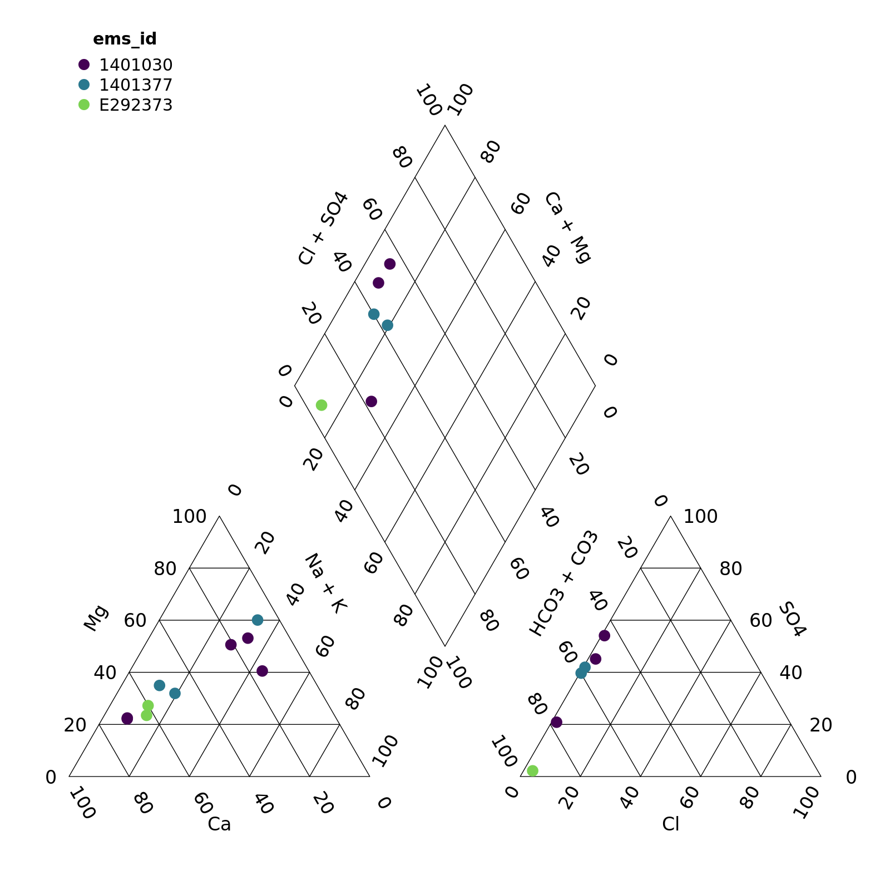
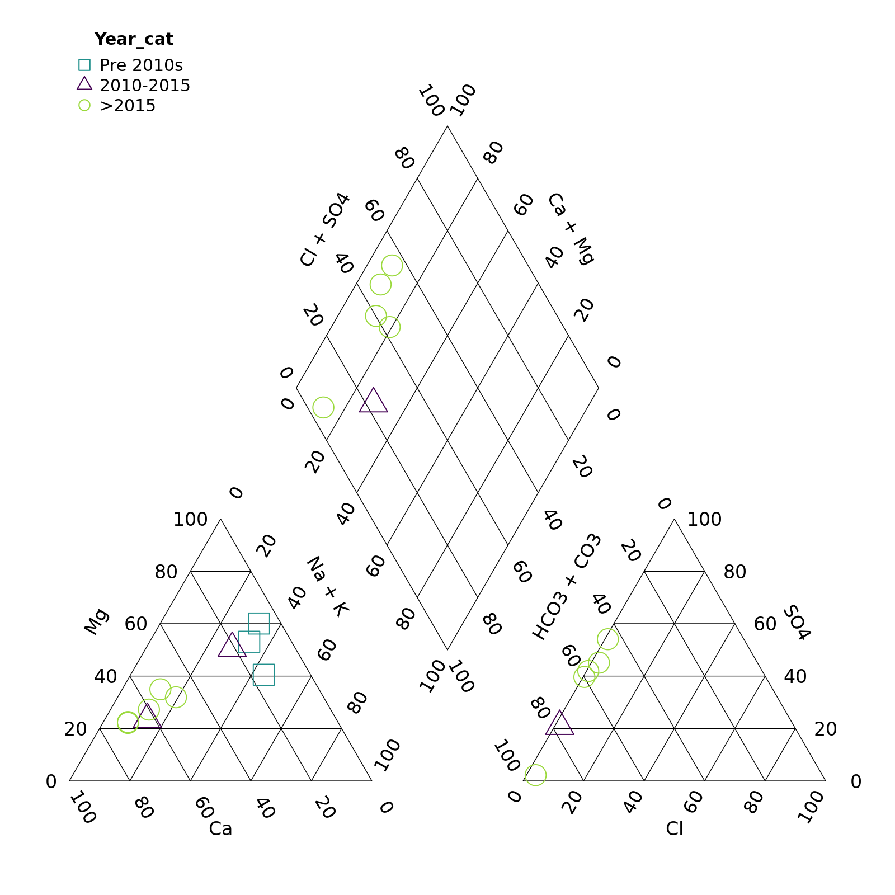
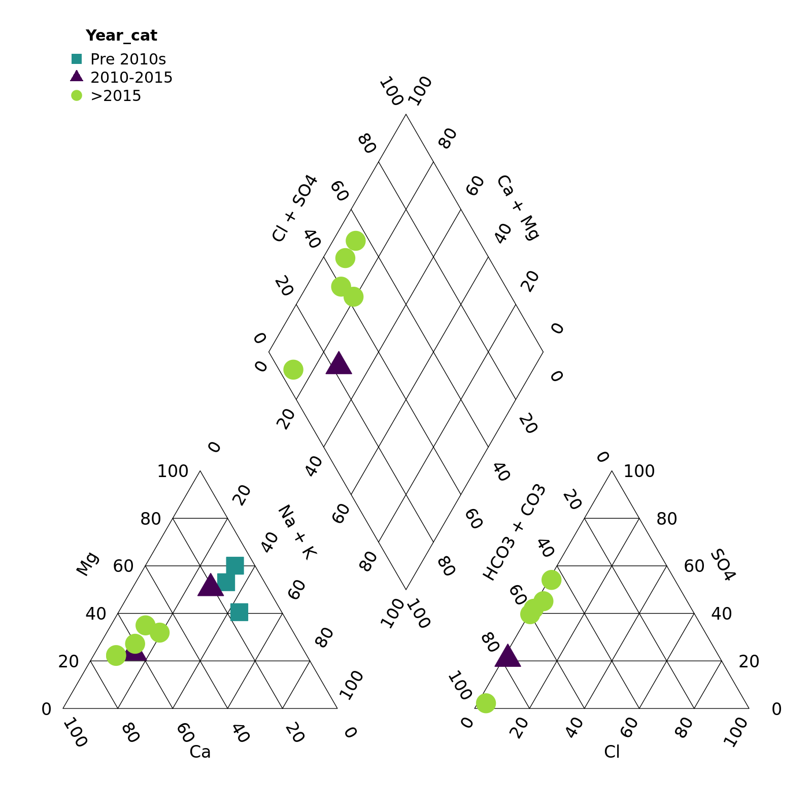
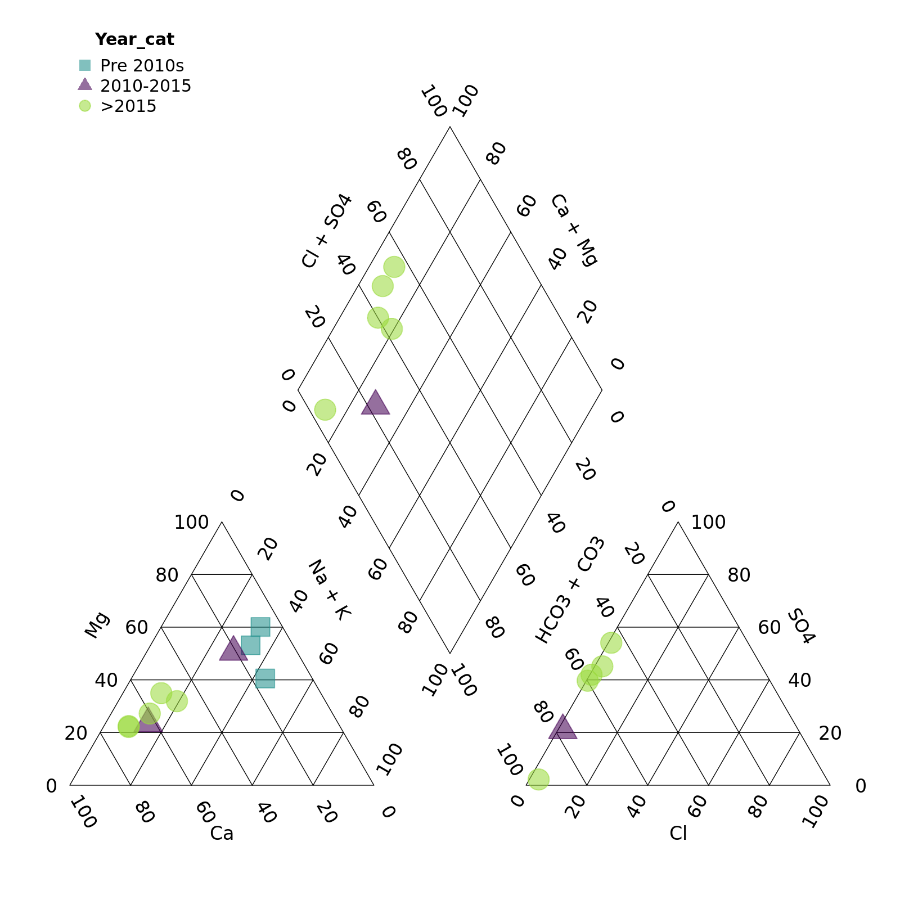
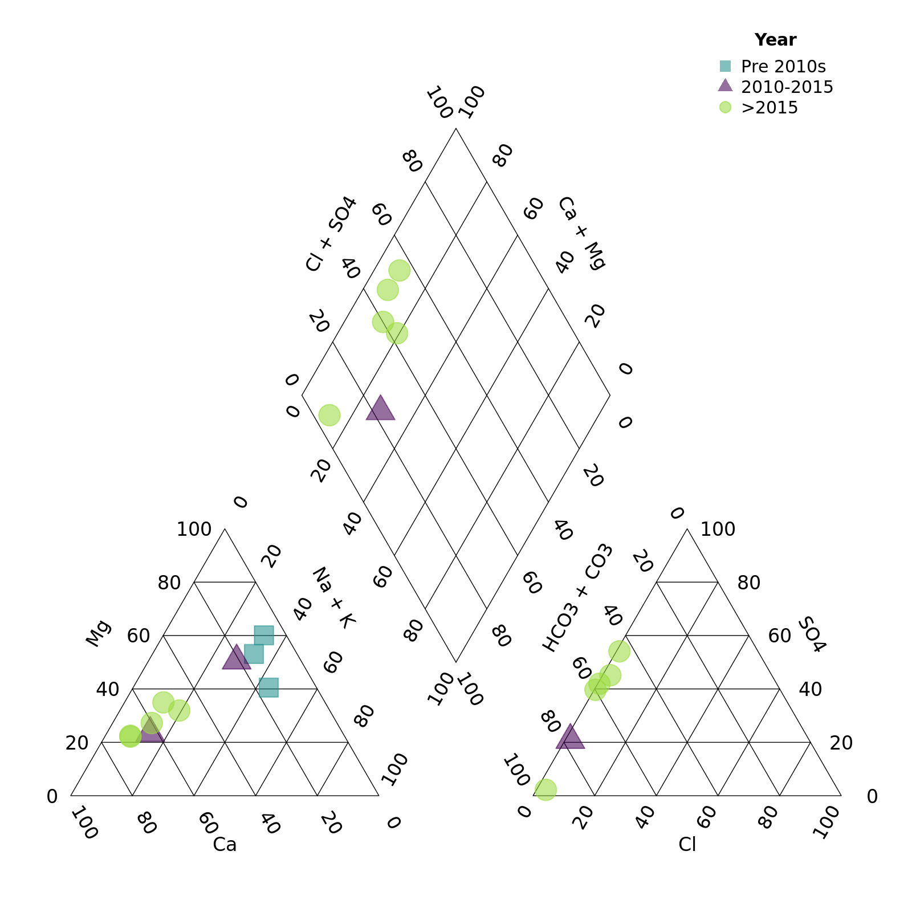
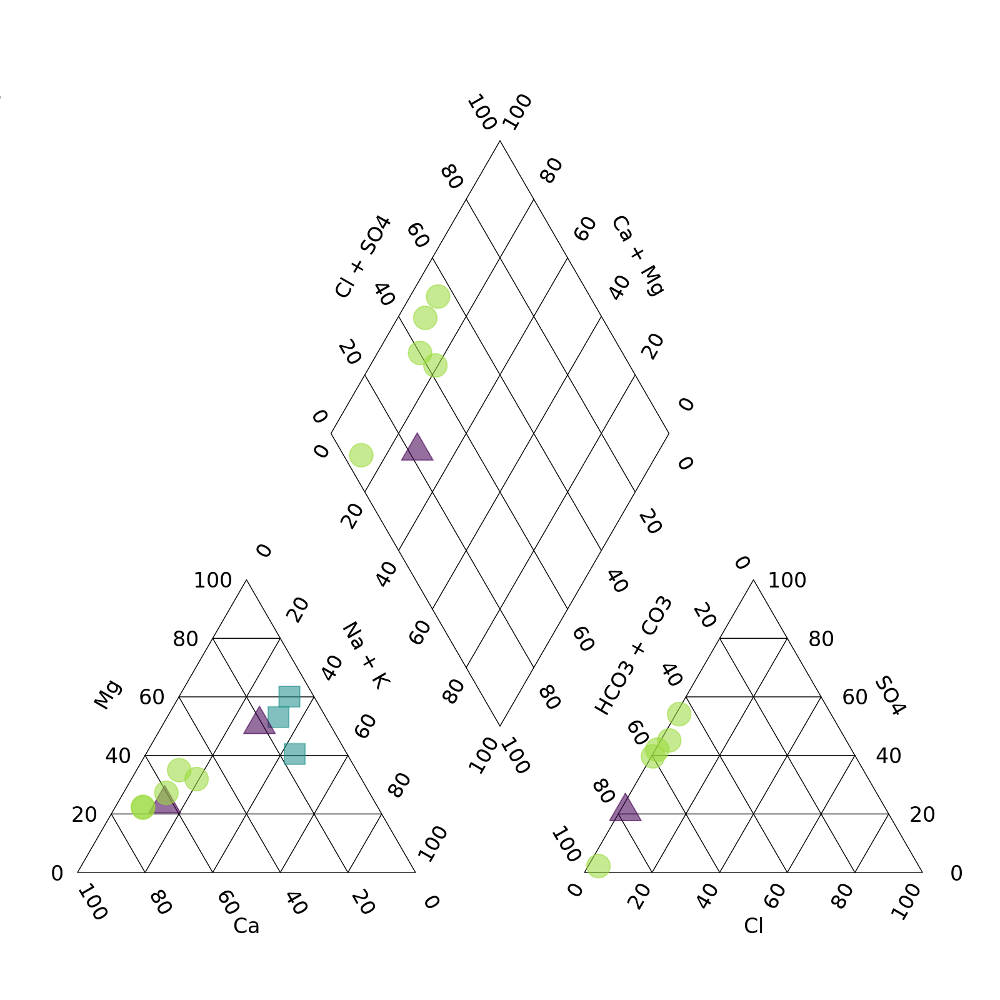

Custom piperplots
piperplots.Rmdrems2aquachem has a function for creating piper plots based on functions from the USGS package smwrGraphs. With piper_plot() we can create custom piper plots using data from EMS but with the option to add grouping variables from other data sets.
This vignette will walk you through how to create custom piper plots using the piper_plot() function in R.
Note: Currently you can only customize your piper plots in R (not via the Shiny app).
Let’s get started!
First we’ll load the packages we want to use
library(rems2aquachem) # To download EMS data and create piper plots
library(dplyr) # To manipulate our data
library(lubridate) # To manipulate dates
knitr::opts_chunk$set(fig.width = 8, fig.asp = 1)Now let’s get our data by downloading from EMS (using the rems package under the hood). Because rems_to_aquachem() is generally used for exporting data to AquaChem, we use the save = FALSE argument to avoid saving to disk, and then use the units_remove() function to remove the units normally stored in the first row of AquaChem data.
r <- rems_to_aquachem(ems_ids = c("1401030", "1401377", "E292373"), save = FALSE)
#> Checking for locally stored historical data...
#> Last download was 2 days ago
#> If you would like to update historical data, run 'rems::download_historic_data()'
#> Checking for locally stored recent data...
#> Fetching data from cache...
#> For consistency EMS charge balances, anion sums, and cation sums have been replaced with recalculated values.
#> See `?charge_balance` for more details.
r <- units_remove(r)Let’s take a quick look… lots of data!
r
#> # A tibble: 15 × 178
#> Sample_Date SampleID Coord_Lat Project Coord_Long StationID Watertype Analysis_Date shortWatertype Comment
#> <date> <chr> <dbl> <chr> <dbl> <chr> <chr> <date> <chr> <chr>
#> 1 1987-07-07 1401030-1 49.2 BACKGROUND -120. 075 Fresh Wa… NA <NA> <NA>
#> 2 1991-08-07 1401030-2 49.2 BACKGROUND -120. 075 Fresh Wa… NA <NA> <NA>
#> 3 1994-06-08 1401030-3 49.2 BACKGROUND -120. 075 Fresh Wa… NA <NA> <NA>
#> 4 2001-09-09 1401030-4 49.2 BACKGROUND -120. 075 Fresh Wa… NA <NA> <NA>
#> 5 2009-11-11 1401030-5 49.2 BACKGROUND -120. 075 Fresh Wa… NA <NA> <NA>
#> 6 2010-08-09 1401030-6 49.2 BACKGROUND -120. 075 Fresh Wa… NA <NA> <NA>
#> 7 2016-11-02 1401030-7 49.2 BACKGROUND -120. 075 Fresh Wa… NA <NA> <NA>
#> 8 2018-06-14 1401030-8 49.2 BACKGROUND -120. 075 Ground W… NA <NA> <NA>
#> 9 1987-07-07 1401377-1 49.2 BACKGROUND -120. 203 Fresh Wa… NA <NA> <NA>
#> 10 1989-10-11 1401377-2 49.2 BACKGROUND -120. 203 Fresh Wa… NA <NA> <NA>
#> 11 1994-03-24 1401377-3 49.2 BACKGROUND -120. 203 Fresh Wa… NA <NA> <NA>
#> 12 2016-11-02 1401377-4 49.2 BACKGROUND -120. 203 Fresh Wa… NA <NA> <NA>
#> 13 2020-06-29 1401377-5 49.2 BACKGROUND -120. 203 Ground W… NA <NA> <NA>
#> 14 2015-03-06 E292373-1 49.4 GROUNDWATER -125. 426 Fresh Wa… NA <NA> <NA>
#> 15 2017-10-11 E292373-2 49.4 GROUNDWATER -125. 426 Fresh Wa… NA <NA> <NA>
#> # … with 168 more variables: Reference <chr>, Quality_control <chr>, Duplicate_ID <chr>, Labcode <chr>,
#> # Location <dbl>, Geology <chr>, X <dbl>, Y <dbl>, Elevation <dbl>, Well_Depth <dbl>, Screen_Top <dbl>,
#> # Screen_Mid <dbl>, Screen_Bottom <dbl>, Gradient <chr>, Station_Comment <chr>, Sample_Depth <dbl>, Temp <dbl>,
#> # `14C` <dbl>, `18O` <dbl>, `2H` <dbl>, Ag_diss <dbl>, Ag_tot <dbl>, Al_diss <dbl>, Al_tot <dbl>,
#> # As_diss <dbl>, As_tot <dbl>, B <dbl>, B_tot <dbl>, Ba <dbl>, Ba_tot <dbl>, Benzene <dbl>, Br <dbl>, Ca <dbl>,
#> # Ca_tot <dbl>, Cd_diss <dbl>, Cd_tot <dbl>, Cl <dbl>, CN_diss <dbl>, CN_tot <dbl>, Co_diss <dbl>,
#> # Co_tot <dbl>, CO3 <dbl>, Cond <dbl>, Cond_field <dbl>, Cr_diss <dbl>, Cr_III_diss <dbl>, Cr_tot <dbl>, …By default, the piper plot creates a plot with points coloured by EMS ID.
piper_plot(d = r)
We can override this by specifying the group argument ourselves. In this case, let’s create a column Year and colour points that.
r <- mutate(r, Year = year(Sample_Date))
piper_plot(d = r, group = "Year")
We can also customize the appearance of the points.
First let’s create some year categories to group by. We’ll also turn this variable into a factor (category) and specify the order of the levels so our legend is in the correct order.
r <- mutate(r,
Year_cat = case_when(Year < 2010 ~ "Pre 2010s",
Year >= 2010 & Year <= 2015 ~ "2010-2015",
Year > 2015 ~ ">2015"),
Year_cat = factor(Year_cat,
levels = c("Pre 2010s", "2010-2015", ">2015")))Note that we need to match the number of groups to the number of colours, shapes, etc. or supply only one value. For example, here we want all the points to be large and open, so we specify point_size = 0.2 and point_filled = FALSE.
piper_plot(d = r, group = "Year_cat",
point_colour = c("#21908C", "#440154", "#9AD93C"),
point_shape = c("square", "triangle", "circle"),
point_filled = FALSE, point_size = 0.2)
Hmm, those points are a bit tough to see
piper_plot(d = r, group = "Year_cat",
point_colour = c("#21908C", "#440154", "#9AD93C"),
point_shape = c("square", "triangle", "circle"),
point_filled = TRUE, point_size = 0.2)
Perhaps with a bit of transparency? We can add this by adding two digits to the end of our colour codes. "#21908C" -> "#21908C90" adds a touch of transparency. (We can also omit point_filled = TRUE as points are filled by default.)
piper_plot(d = r, group = "Year_cat",
point_colour = c("#21908C90", "#44015490", "#9AD93C90"),
point_shape = c("square", "triangle", "circle"),
point_size = 0.2)
Finally we can adjust the legend position and title
piper_plot(d = r, group = "Year_cat",
point_colour = c("#21908C90", "#44015490", "#9AD93C90"),
point_shape = c("square", "triangle", "circle"),
point_size = 0.2,
legend_position = "topright",
legend_title = "Year")
We can put the legend anywhere we want. Think about the plot area as running from -1 to 1 from left to right (x) and -1 to 1 from top to bottom (y). We then specify the (x,y) coordinates that we want. You can even go out of the plotting area by specifying numbers out of the -1 to 1 range.
piper_plot(d = r, group = "Year_cat",
point_colour = c("#21908C90", "#44015490", "#9AD93C90"),
point_shape = c("square", "triangle", "circle"),
point_size = 0.2,
legend_position = c(-1.5, 1),
legend_title = "Year")